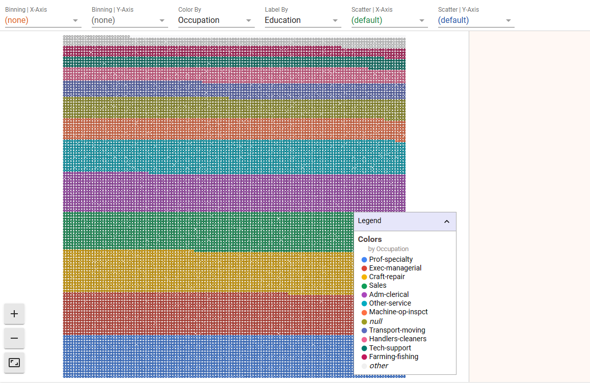
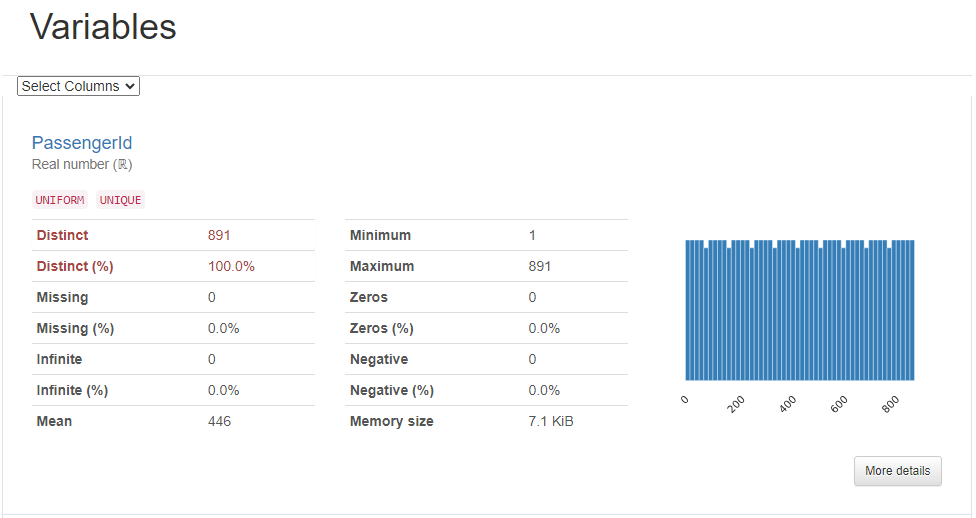
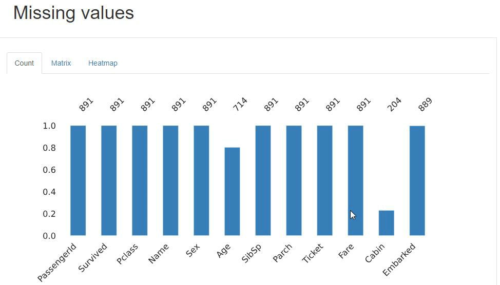

EDA组件
EDA 是 Exploratory Data Analysis（探索性数据分析）的缩写。
EDA 是数据分析过程中的一项重要任务，旨在通过可视化和统计方法来理解数据集的特征、结构和关系，揭示数据中的模式、异常和潜在关联。通过对数据进行探索性分析，可以获取关于数据集的初步认识，为后续的建模、假设检验和预测建立基础。
EDA 通常涉及以下任务：
- 数据质量检查：检查数据集中是否存在缺失值、异常值或错误数据，并进行处理。
- 描述性统计分析：计算数据集的基本统计指标（如均值、中位数、标准差等）以及数据的分布情况。
- 数据可视化：使用图表、图形和图像等可视化工具展示数据的特征，以发现模式、趋势、异常值等。
- 相关性分析：探索数据变量之间的关系，通过计算相关系数或绘制散点图等方法来了解变量之间的相关性。
- 特征工程：识别和构造合适的特征，以提高后续分析或建模的效果。
EDA分析组件
EDA分析组件提供了一个直观的可定制界面，用于探索数据集内不同特征的数据点之间的关系。使用EDA分析组件，您可以根据每个数据点的特征值来控制它的位置、颜色和视觉效果。

创建EDA分析组件
鼠标移动至单元格的下边界，当显示悬浮操作框时，单击更多类型，然后选择EDA分析。
基本操作
为学习EDA分析组件的基本操作，我们用一个简单的操作案例来体验。
例：通过EDA分析组件从不同维度探索泰坦尼克船上人员的分布情况：

可以看到EDA组件有三个主体区域
- 顶部 —— 控制工具栏
- 中间 —— 主可视化区域
- 右侧 —— 数据点信息面板
EDA分析组件基本的操作流程如下：
0.创建EDA分析单元格
1.下拉选择您要探索的DataFrame
2.点击运行
3.使用控制工具栏中的控件来驱动探索
4.观察主可视化区域的分析结果
5.点击数据点，右侧信息面板显示详细信息

单变量分析
这里我们将分别地查看目标变量，即 Survived（是否生还） 和其它的分类特征如sex（性别）、Pclass（船舱等级）、（age）年龄分箱等。当然，你也可以看看其它特征。

推论：
- 数据集中的女性生还人数比例较高
- 一等舱和二等舱相比三等舱生还人数比例较高
- 0-10岁儿童的生还比例较高
双变量分析
我们再来找找目标变量和分类自变量（Survived）之间的关系。

推论：
- 女性生还希望更大
- 乘坐一等舱的生还希望更大
- 从年龄来看没有太明显的分别，相比较而言0-10岁儿童生还希望较大
EDA概览
对于一个数据分析师来说，项目开始的第一步总是数据探索性分析(EDA)。但我们知道EDA通常都很繁琐和无趣，而EDA概览组件能够轻松生成一份数据分析报告。
这份报告中包含常用的数据分析指标：例如数据的形状、缺失值、各个变量的分布及变量之间的相关性等指标，以一种非常直观的形式反映数据的健康程度，为数据分析师提供大量的时间用于特征工程和建模。
创建EDA概览
鼠标移动至单元格的下边界，当显示悬浮操作框时，单击更多类型，然后选择EDA概览。
基本操作
0.创建EDA概览单元格
1.下拉选择您要探索的DataFrame
2.点击运行
3.查看EDA分析报告

数据分析报告中总共包含六部分：分别是概要、各个变量的详细信息、变量交互、相关性、缺失值、样本。
概要（Overview）
概要提供对数据集的静态描述：包含特征、数据、缺失值、重复行的数量和占比，总数据及平均每条数据所占用内存的大小，变量的数据类型等信息。

Alerts 展示数据的警示信息。包含重复行占比、哪些变量具有很高的相关性、数据是否均匀分布等信息。

变量信息（Variables）
变量信息集成了pandas 的 info、describe 等基础功能，提供了友好的界面，对每一个变量进行详细的统计，为数据分析师减轻了不少工作量。
变量信息能够统计数据集中所有的变量共有多少个不同的值以及占总数据量的比例，缺失值、无穷、均值、最小最大值、0的个数、每个特征占的内存大小。

More details 按钮能够切换详细信息，提供了变量的分数位统计信息、直方图、每个值出现的次数、极端值出现的次数等信息。

变量交互（Interactions）
变量交互可以绘制变量之间的散点图或者其它图像，可以直观分析变量间的相关性。

相关性（Correlations）
相关性通过绘制热力系数图，直观反映变量之间的相关性，集成了pandas 的 corr 和 sns 的heatmap功能，提供了各个方法的计算原理。

Table 用来显示变量之间的相关性系数。

缺失值（Missing values）
缺失值：用图形的方式直观的反映哪些变量含有缺失值，以及缺失值之间的关系。

样本（Sample）
展示前十行和后十行的样本